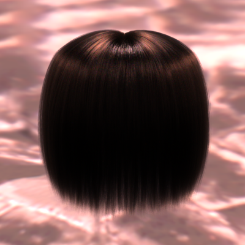
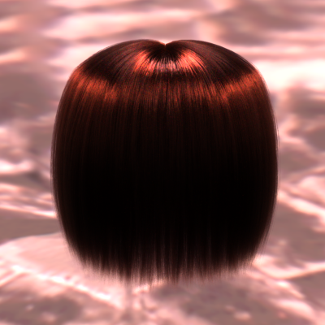
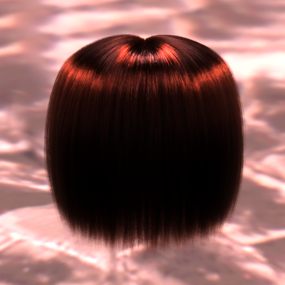

Fig. 1. This figure shows a spiderweb iridescence example. The left image is a photograph of this effect by Marianna Armata. The middle image is rendered using our wave-based BCSDF and the image on the right is rendered using a previous ray-based BCSDF. Our wave optics fiber scattering model is able to produce strong color effects with hues similar to the photograph while the ray model produces a colorless appearance. Similar iridescence effects can also be seen in eyelashes or a Dandelion seed head.
Abstract
Existing fiber scattering models in rendering are all based on tracing rays through fiber geometry, but for small fibers diffraction and interference are non-negligible, so relying on ray optics can result in appearance errors. This paper presents the first wave optics based fiber scattering model, introducing an azimuthal scattering function that comes from a full wave simulation.
Solving Maxwell's equations for a straight fiber of constant cross section illuminated by a plane wave reduces to solving for a 3D electromagnetic field in a 2D domain, and
our fiber scattering simulator solves this 2.5D problem efficiently using the boundary element method (BEM). From the resulting fields we compute extinction, absorption, and far-field scattering distributions, which we use to simulate shadowing and scattering by fibers in a path tracer. We validate our path tracer against the wave simulation and the simulation against a measurement of diffraction from a single textile fiber. Our results show that our approach can reproduce a wide range of fibers with different sizes, cross sections, and material properties, including textile fibers, animal fur, and human hair. The renderings include color effects, softening of sharp features, and strong forward scattering that are not predicted by traditional ray-based models, though the two approaches produce similar appearance for complex fiber assemblies under many conditions.
Additional Results
1. Forward scattering
Compared to the wave optics predictions, the previous ray model has less energy in the forward scattering direction and this results in appearance differences, especially in the backlit setting. We show a video of orbit renderings with a head of curly black hair under an area light and an environment light. The ray result is lacking energy near the forward direction and results in a dimmer appearance on the edge of the hair model.
2. Interactive comparison

Black hair fibers have an elliptical cross section with semi-major axis 19um and semi-minor axis 10um.


Red hair fibers have an elliptical cross section with semi-major axis 16um and semi-minor axis 10um.
Hamster fur has six different colors of elliptical fibers with semi-major axis 16um and semi-minor axis 10um.
We illustrate two examples of a Gaussian beam illuminating a circular cross section. The three columns show the real part of the z component of the incident electric field, the scattered field and the total field respectively.
Acknowledgement
The authors would like to thank Zechen Zhang and Francesco Monticone for their helpful discussion on this project. We thank Sitian Chen for generating the woven pattern used in the sofa scene and Lingqi Yan for letting us use the converted hamster scene. We would also like to thank Under Armour for providing the textile sample. This work was supported by the National Science Foundation under grant IIS-1909467.


{kind=link}
{kind=link}
{kind=link}
{kind=link}
{kind=link}
{kind=link}
{kind=link}
{kind=link}